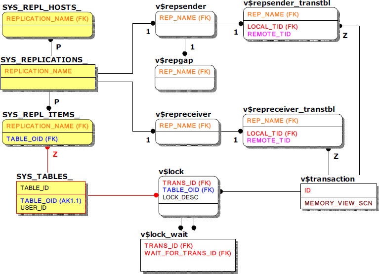

The relationship between meta tables and performance views in which only the main key column to be referenced in the join query for monitoring related to replication are shown is as follows.
For reference, the SYS_REPL_ITEMS_ column name and user name are stored together so that it is not necessary to join SYS_USERS_ and SYS_TABLES_ to know the database user name and table name.
In addition, as mentioned above, due to the nature of the replication transaction without the session number and query number, the corresponding transaction is identified in the replication partner server through v$repsender_transtbl and v$repreceiver_transtbl.

Main Meta Tables
SYS_REPLICATIONS_
This is a meta table that stores information about all the replicated objects, and it is possible to check detailed information such as the point in time (XSN) in which the replication target server reflects the replication.
SYS_REPL_HOSTS
This is a meta table that stores the information of the server to be replicated, and it is possible to check the address (HOST_IP) and port number (PORT_NO) of the server to be replicated.
SYS_REPL_ITEMS_
This is a meta table that stores information about the table to be replicated.
Main Performance Views
v$repsender
This is a performance view that shows the status of the sender, which is a replication send thread. If the sender is not running, it is not searched.
v$repgap
This is a performance view that shows the gap between the latest redo log serial number and the redo log serial number sent by the sender. It is measured by the sender, so if the sender is not running, it is also not retrieved.
v$repreceiver
This is a performance view that shows the status of the receiver, which is the replication receiving thread. If the receiver is not running, it is not searched.
v$repsender_transtbl
This is a performance view that shows the replication transaction that the sender is executing, and the transaction of the other server corresponding to the transaction can be known. This is also not searched if the sender is not running.
v$repreceiver_transtbl
This is a performance view that shows information about the replication transaction being executed by the received. This shows the transaction of the other server corresponding to the transaction. This is a major reference when a local transaction is waiting due to the lock of a replication transaction. This is also not searched if the receiver is not running.
{kind=link}